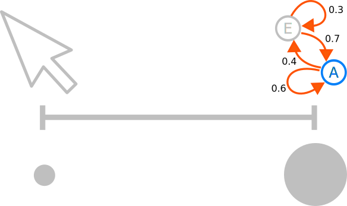

The Title Of Your Presentation
Pointcloud Cleaning
Notes

Background

How laser scanning works
Triangularion
TOF
Phase

Existing systems
Tools that fall on a spectum
high area of influence, low area of influence
low accuracy, high accuracy
low control, high control
perfect tool would select things in one click
Cleaning
- while accuracy < theshold
- make selection
- correct selection
Cleaning is itterative

- Point cloud cleaning is tedious
- up to 2 hours per scan
Cleaning time
$$task duration = \sum_{i=0}^n time_i + overhead_i$$
Sum of the time associated with each action
Reduce actions
Reduce time
Reduce action time
- Better UI = Less overhead
Reduce number of actions action
- Better Tools = Less user actions
Solution
- Better UI
- Better Tools
- Obviously
Extisting systems
- Propriety = pretty good
- Open source = pretty bad
- No undo
- Limited tooling
- Bad navigation
- No good for building better tools
To do better tools, we need a framework
System goals
- Base system for improved cleaning tools
- Minimal task overheads
- Open source & cross platform
To do better tools, we need a framework
Usability
- 2D & 3D view
- 2D pan & zoom to mouse pointer
- 3D 1st person navigation & tack ball (without the ball)
- Roll correction
- Unlimited undo
Features
Limitations
- Grey scale PTX
- Scans need to fit in memory
Layers & selections
- Memory efficiency
- Cheap set operations
Speeding up segmentation
- Accuracy is not the primary goal
- Reduce the number of user actions
- Avoid increasing action time
Manual segmentation tools
- Non special polygon select (2D & 3D)
- Depth sensitive brush (2D & 3D)
Automated segmentation
- Identify good features
- Cluster points
- Build model
- Run model
Challenges
- Non uniform density
- Noisy data
- Hard to model targets (trees, people, cars...)
Wall segmentation
- Local PCA identifies candidate regions
- Grow region from the flattest seed point while normals point in the same direction
Results
- 2 minute processing time on 400mb file
- 65% - 80% recall
- 90 - 100% precision
- User has to select remaining areas
Random forest
- Find features that correlate well with known targets
- eg. Normals, PCA, XYZ, Intensity
- User roughly labels target regions
- Train ensemble on a subset of labeled data
- Apply classifier
Results
- 1 minute processing time on 400mb file
- 70% - 90% recall
- 75 - 80% precision
- Results are dependent on labeling
- Results can be incoherent and hard to fix up
Speed evaluation
- User evaluation
- Compare cleaning with and without tool
- If the tool provides a speed up it is beneficial
Problems with user evaluation
- Large sample required to minimise variablity
- Expensive when tweaking parameters
Automated user evaluation
- Large sample required to minimise variablity
- Expensive when tweaking parameters
- Parameters can be tweaked to match user behaviour
- Other tools can be faster by factor of N
- Need to adjust results